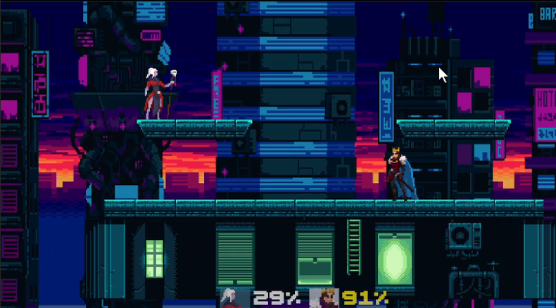
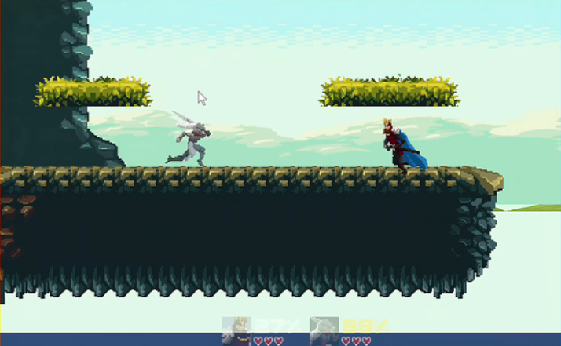

Developers Zhang Jianyuan（张健源）from XJTU
Wang Yijia（王议甲）from XJTU
Liu Yuanhao（刘远浩）from XJTU
Li Xinze（李欣泽）from XJTU
Don't Drop
Game Introduction
Don't Drop! is a casual multiplayer party game. Easy to pick up, fun to play with friends.
Knock opponents off the platform to win. Each player has 3 lives. Use items like speed boost, shield, and bomb to turn the tide.
Simple, joyful, and perfect for casual battles!
游戏介绍
一款轻松有趣的多人派对游戏，操作简单，随时开玩。
将对手击下平台即可获胜，每位玩家拥有 3 条生命。
善用加速、护盾、炸弹等道具，轻松创造逆转。
欢乐休闲，适合朋友聚会对战！
Game Pitch Click to Play Booklet (EN) Booklet (CN)



